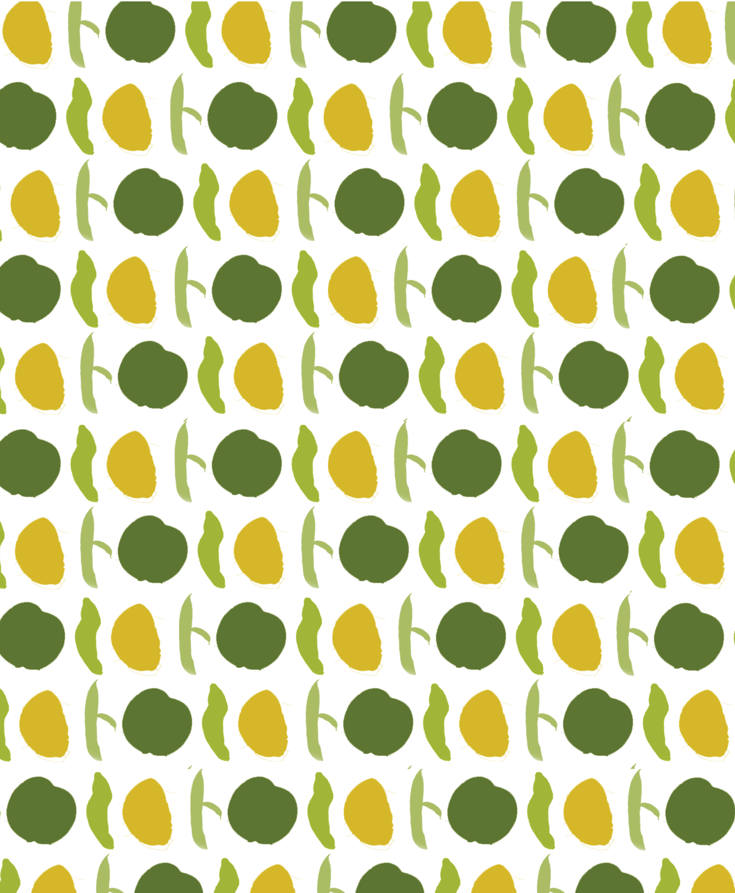
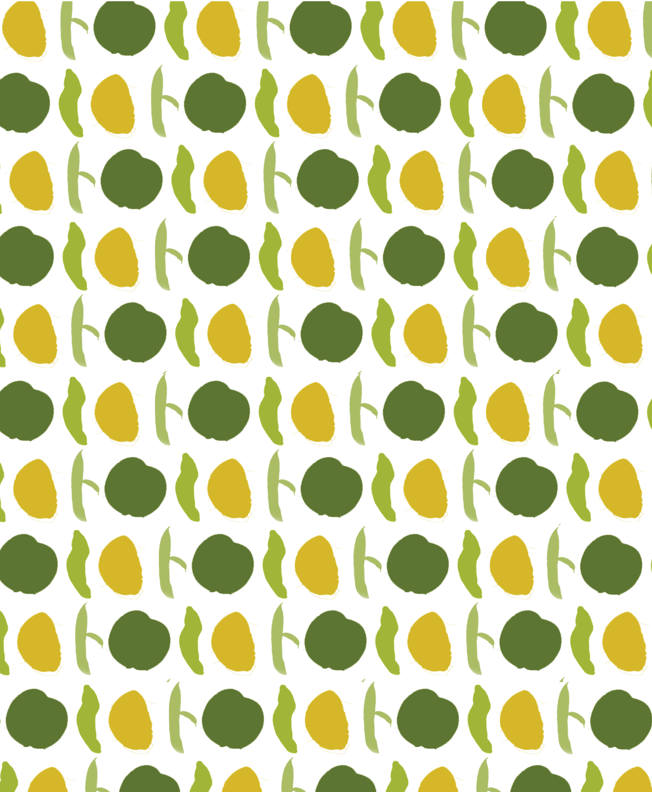
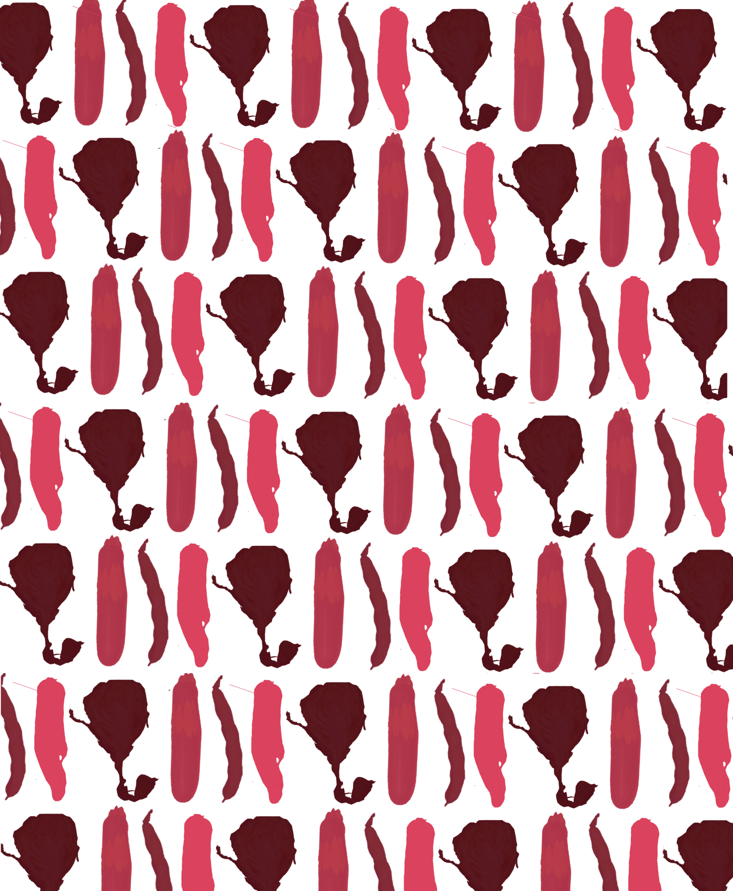
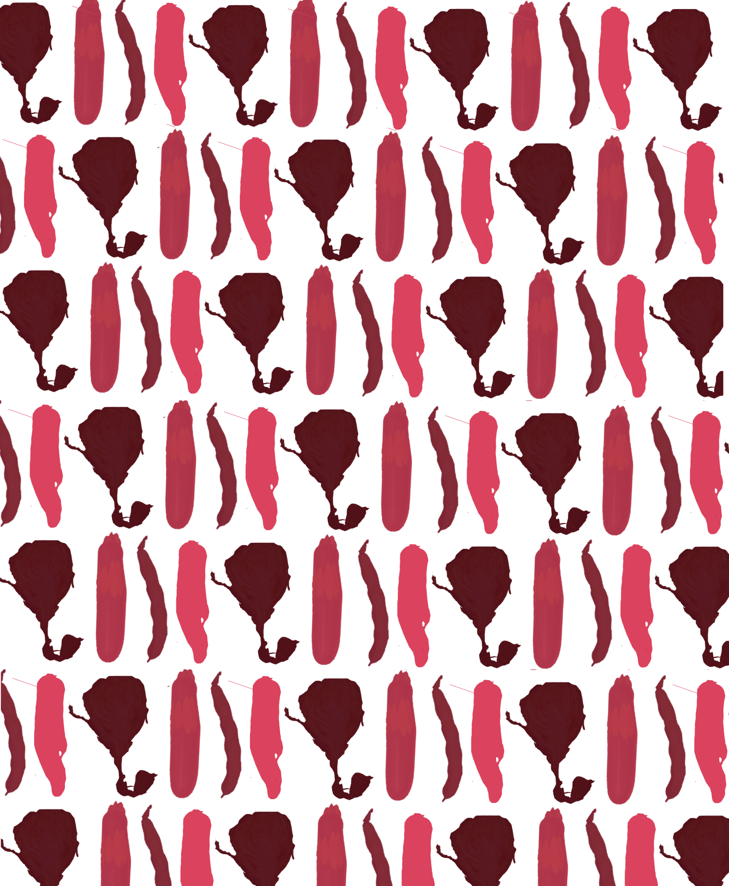
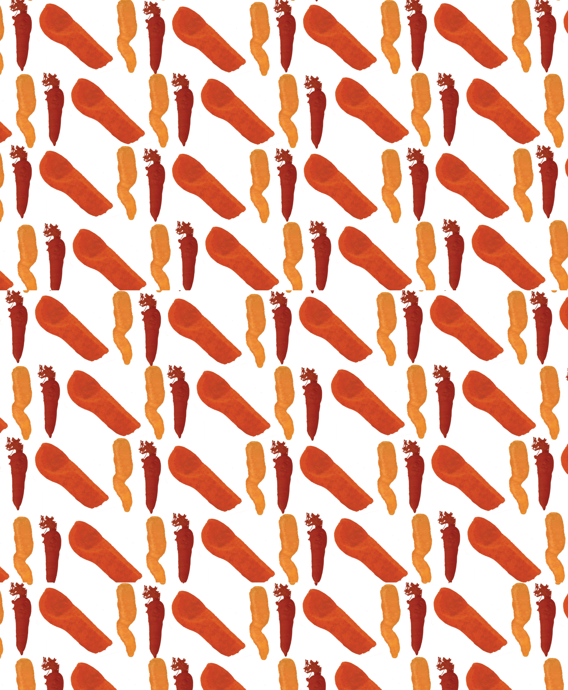
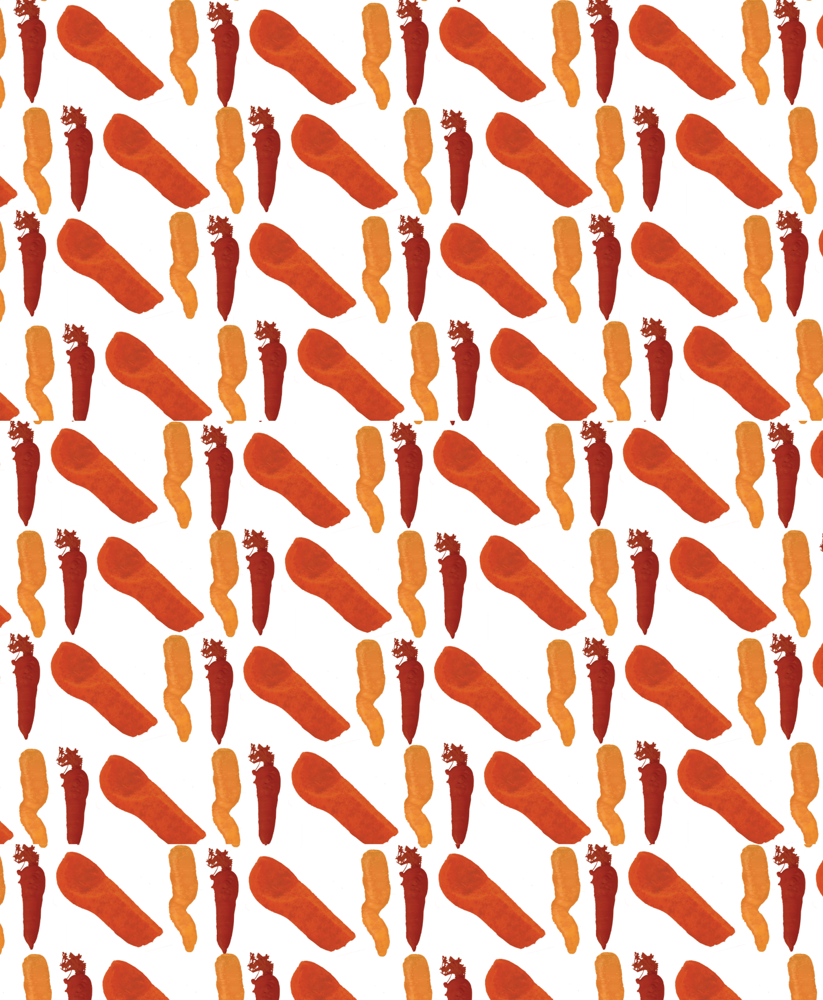
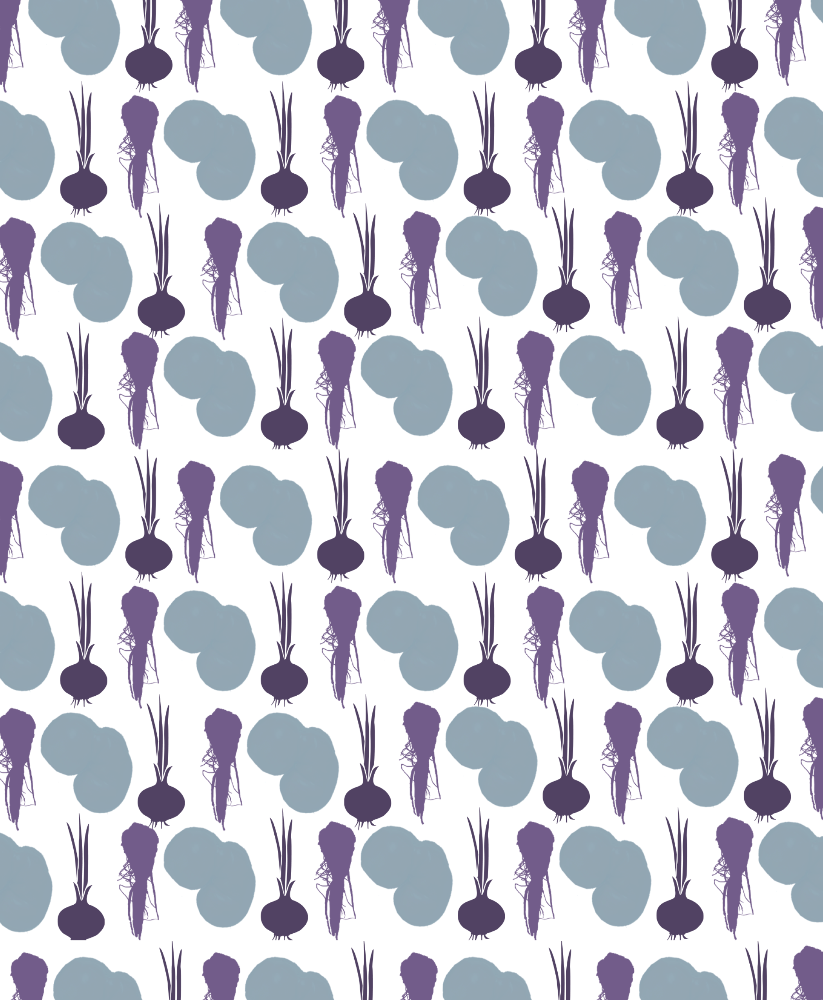
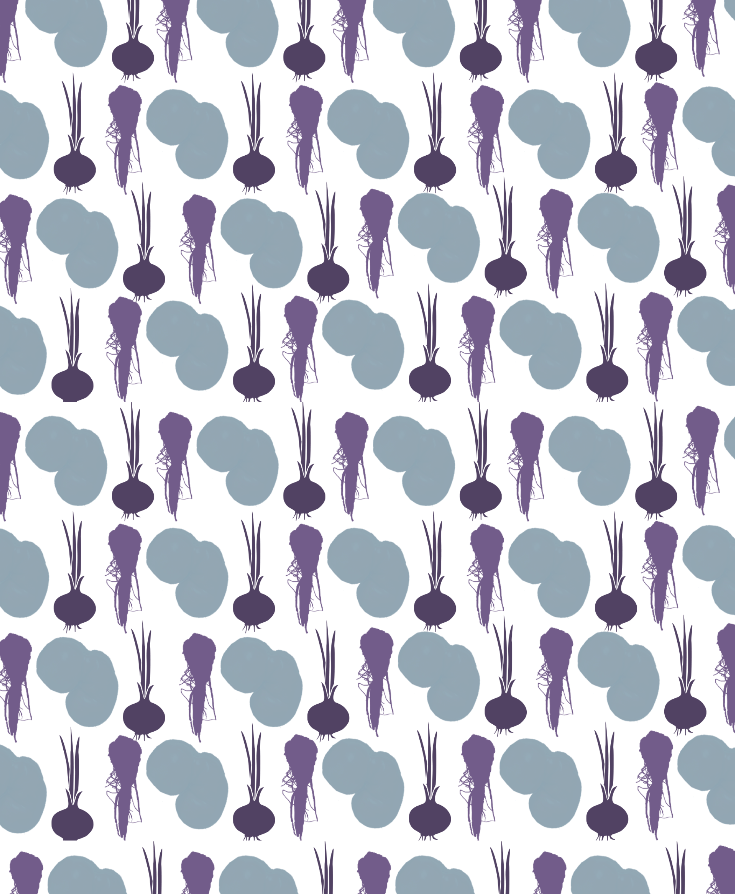
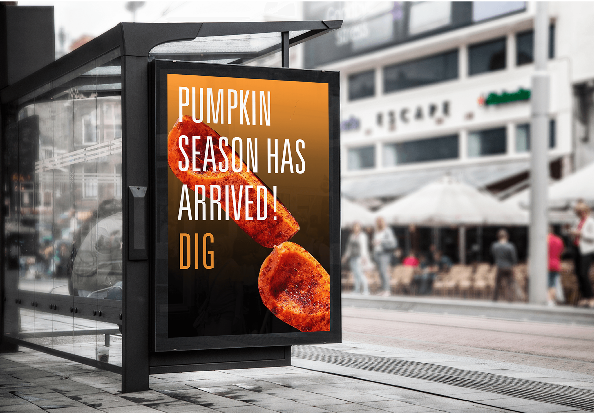
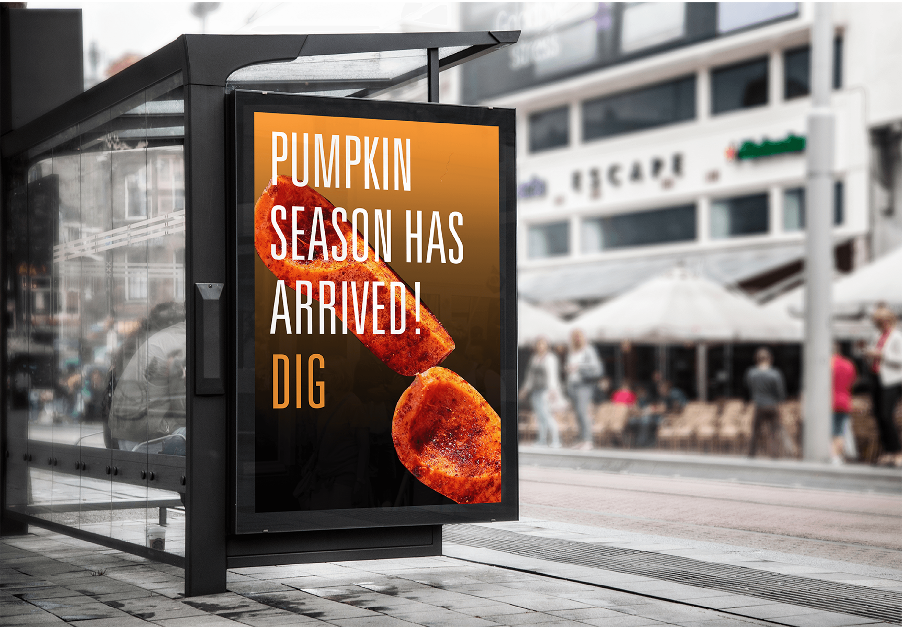

Dig is a restaurant/catering service that serves produce that would otherwise end up in landfills. They believe in zero-waste and cook and serve only ‘ugly vegetables,’(vegetables that have blemished and are under/overgrown) and the weird, wasted cuts of meat, at an affordable price. This project aims to re-brand Dig while highlighting their unique assets, as well as distinguishing them from their competitors.
LOGO RE-DESIGN | ORIGINAL & NEW
For the logo, I felt the use of a more narrow san-serif, like Univers Ultra Light Condensed 49, would represent the minimal and clean eating values the company prides itself on holding.
SEASONAL COLOR PALETTE | GRADIENTS
One of the attributes I'm focusing on highlighting is Digs' seasonal produce change. Since all of their ingredients are locally grown and sourced, I decided to brand each season with an individual color-palette in order to highlight the new arrivals. In order of the seasons, from left to right - Summer, Spring, Fall, and Winter.
SEASONAL PATTERNS
 

 

 

 

The seasonal patterns are each represent some of the most anticipated produce of that season and are to be used primarily on the take-out bags, and in-store artwork and merchandise.
PHYSICAL APPLICATION


 

Another key aspect of the rebrand is Digs’ partnerships with companies like NYCParks and Food Bank to promote health and sustainability apart from the food. Highlighting the seasonal collaborations might incentivize the customers to not only eat healthier but also implement these environmentally conscious values in other areas of their lives.
Check out the entire Dig Brand Campaign here.